This section explains how to set up the initial 30-day evaluation license, and also provides additional related information.
After you download a commercial edition from the Download Center, you will receive an email with a license key for the evaluation period. To start the evaluation period, open the license file located in
# License can also be set via the If you're using Docker images for evaluation, add the -e option to the Docker run command, using the license key in the email.
The same evaluation license is used for all downloaders, enabling you to evaluate the full
If you are using xap-license.txtgs-license.txtxap-license.txtgs-license.txt
If you are using more than one machine for your evaluation, you must apply the license to each machine.
After you have applied the license, you can access all of the available features for the duration of the 30-day evaluation period without any limitations. When the evaluation license expires, the next time you restart the data grid you will only have access to the open-source functionality. Contact GigaSpaces support to purchase a license for the edition that meets your needs. After the new license is applied, the relevant functionality will once again be available.
The license key can be viewed in the application logs. When the system starts, it writes an information summary to the logs and console, including the license key. You can use the logs to verify that you are using the correct license key.
If the XAP services are restarted when the license has expired, they will not run. Update the license using one of the methods described in the License Lookup Order section below.
The license is validated whenever the service grid is started. If the license is invalid for some reason (for example, if it is expired), the system will report a problem with the license and terminate. If the license expires while the system is up and running, it will continue to run. However, if a system components fails and tries to restart, it will fail because the license is not valid. Example:
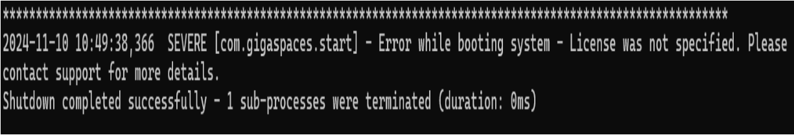
For any of the methods selected, make sure to save the file and restart the XAP services.
The system looks for the license key in the following locations, in the following order:
The com.gs.licensekey system property. See expanded explanation below.
The
A xap-license.txtgs-license.txt
A xap-license.txtgs-license.txtcom.gs.home system property). See expanded explanation below.
A xap-license.txtgs-license.txt
This is the simplest option:
Open the gs-license text file
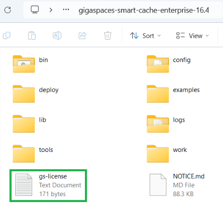
Paste the license key inside.
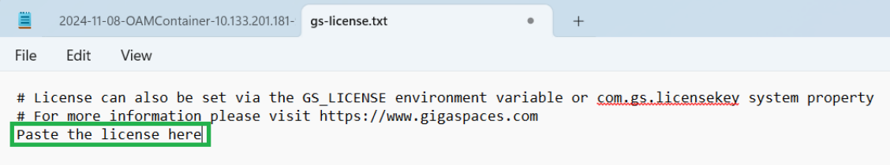
Save and restart XAP services
Upload the license directly into the system properties.
Use either the command line, startup script, batch file or update the setenv-overrides bat/sh file:
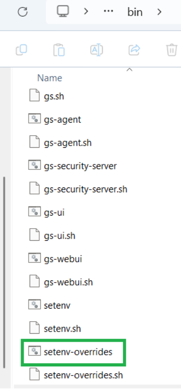
set GS_OPTIONS_EXT=-Dcom.gs.licensekey=12345
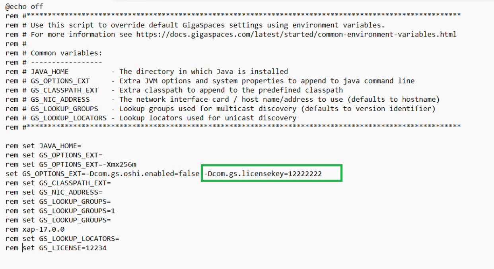
Add the GS_LICENSE environment variable which is located in the setenv-overrides bat/sh file.
For the GS_LIECNSE you will need to set the value GS_LICENSE=licensekeyvalue.
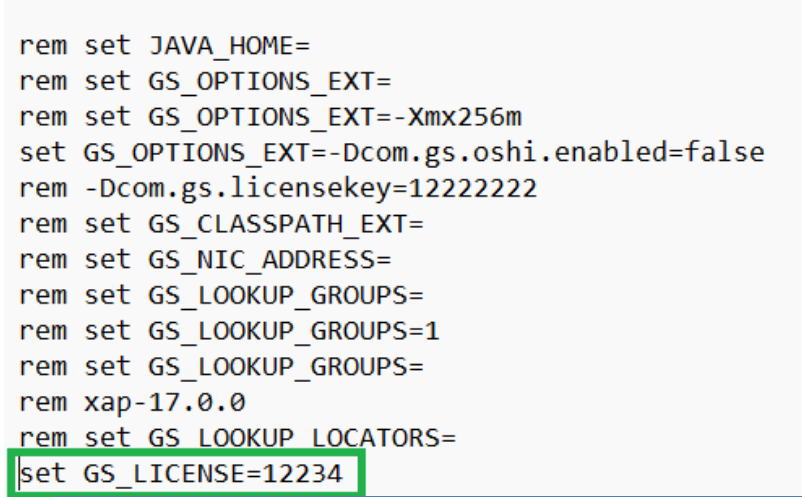
Following are the ways to verify if the license in the system properties is valid:
The XAP services are running.
From the log folder, open one of the recent log files:
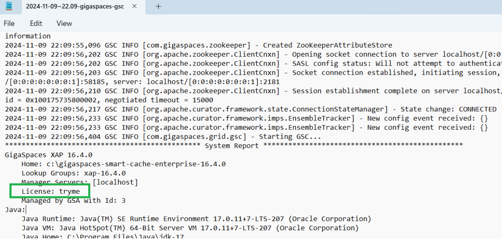
From the Java monitoring and management console, review the license:
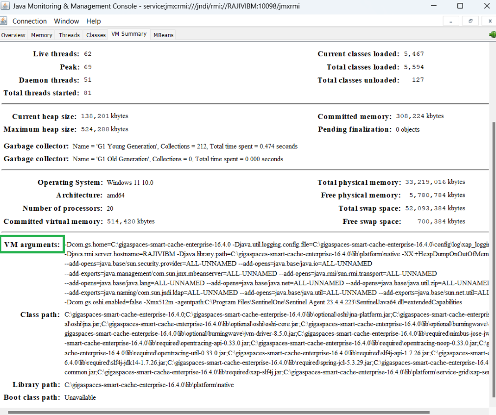
Access the Java console from the GigaSpaces Management Center:
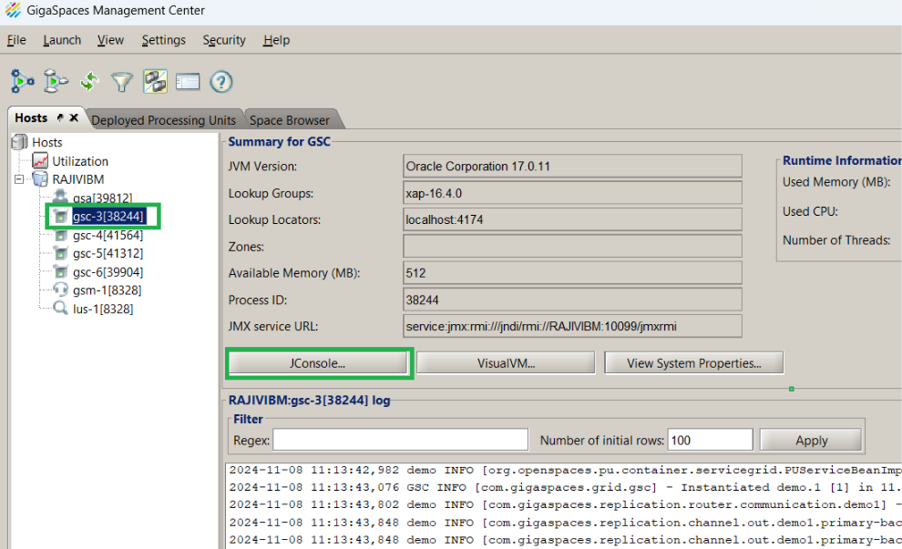
Using the command line, type the following:
jcmd PID VM.system_properties
Example: PID = one of the GSC. From the screen capture above GSC PID = 38244. Type in the command line: jcmd 38244 VM.system_properties.
Search for com.gs.licensekey=license. In the screen capture below, this is tryme.
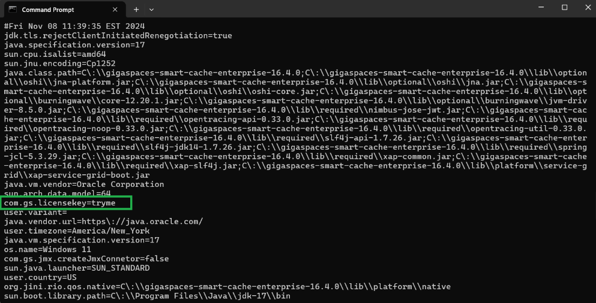
The upper right corner of the GigaSpaces Management Console UI will display the license status:
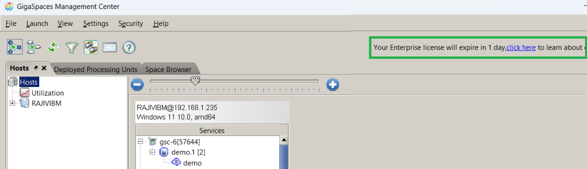